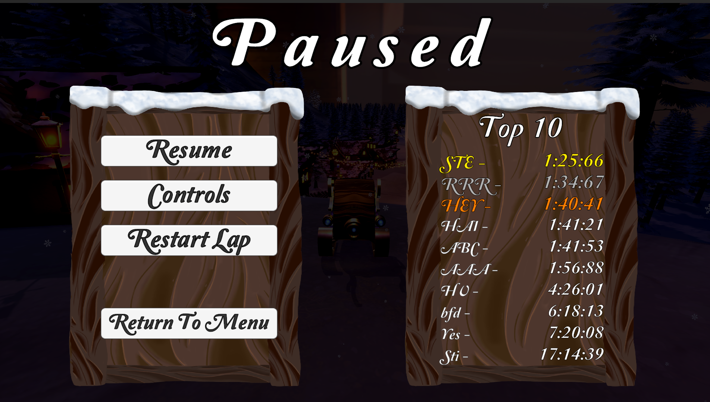

Winter Wonder Ride!

This is project Winter Wonder Ride!
Artists: Daniel Taki, Patrick van der Steen, Randy van Wanrooy, Tristan Maaskant
Devs: Max Geurts, Me
In this project I made the menu's / UI, obstacles and general finetuning.
(For more in depth credits, go to the end of the 3rd video at the top.)
Sprint 1! - AlphaThe sprint was chaotic but productive. We established the menu and general layout.
|
Sprint 2! - AlphaThe 2nd sprint was even more chaotic, and we fell behind schedule. The car was more drivable but still hard to control, bouncing and sliding around.
|
Sprint 3! - BetaThe third sprint was intense. The artists remade the entire map, and Max revamped the car movement with a custom camera. The main and gameplay menus were completed, including a scoreboard and progress checks.
(The full gameplay video is at the top of the page) |
|  |
Personal Challenges!A major challenge (and success) was managing multiple save slots. I used PlayerPrefs since I wasn't familiar with .Json files. 😭
|
Saving became tricky with the TOP10, as I couldn't link file names to the sorted top 10. I solved this by creating a scriptable object for each file, naming them by their deltaTime float value. This allowed me to sort and display them in the UI based on the sorted array. |